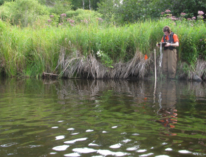

Forecasting Great Lakes Basin Responses to Future Change
Template #75

Societal needs are now commonly including questions such as how to protect the integrity of restoration efforts and flow regimes under conditions of changing climate, evolving landscapes, and increasing demand on resources. The hydrologic simulation models and methods required to support this level of decision making must be scientifically sound, reduce duplication of effort, and promote interdisciplinary problem solving.
Currently, there is a lack of science-based tools for forecasting changes to water flows and select ecological endpoints (e.g., species abundance and distribution, habitat availability and distribution, ecological functions) in Great Lakes watersheds. Societal decisions can be better informed by evaluating effects of future climate drivers, as well as other potential important drivers such as land use change and invasive species introduction. If such tools were widely available in the Great Lakes, they would be well suited for linking to other GLRI elements including road and urban infrastructure design, habitat change, restoration potential, native species enhancement efforts, human health, wildlife health, beach health, and invasive species establishment and persistence.
The primary FY10 work element involves large-scale characterization of the Lake Michigan Basin (LMB). The U.S. Geological Survey Modeling of Watershed Systems (MoWS) Project has proposed the development of a National Hydrologic Modeling Structure (NHMS) to support coordinated, conceptually consistent, and robust hydrologic model development. The NHMS addresses four important aspects which must be considered for a relevant, comprehensive and successful hydrologic-modeling program. These include:
- Development of standard methods which can be applied to produce consistent and comparable hydrologic model studies, regardless of the specific model, geographic region, or study purpose.
- Development of technology which makes the best available data readily accessible to hydrologic modelers. This includes dissemination of results from model studies in a consistent and efficient manner. As a principal provider and consumer of earth science data, the USGS should be a leader in these technologies.
- Relevant research and development in the field of hydrologic modeling to adapt to the increasingly complex questions, and to take advantage of improved data sources as they become available.
- Development of a modeling archive process that provides a platform for model distribution, comparability, and interoperability.
The National Hydrologic Modeling Structure is a set of integrating methods for building models, tools, and data. For instance, the geographic extent of fine-scale model applications must “nest” within the extent of coarser-scaled regional models. The GLRI climate modeling project will act as a test bed for the National Hydrologic Modeling Project approach, and will develop the coarse-scale Precipitation-Runoff Modeling System (PRMS – Leavesley and others, 1983; Regan and others, in review) model within the framework of the National Hydrologic Modeling Structure using the MoWS resources funded by others.
In addition to hydrological flows, ecological endpoints of societal interest are important metrics for assessing the effect of climate and land use change on the Great Lakes ecosystem and restoration. Therefore, a secondary work element is needed to relate forecast potential changes in important ecological drivers that result from climate and land-use change scenarios. A regional SPAtially Referenced Regression On Watershed attributes model (Great Lakes SPARROW model, funded by USGS NAWQA; D. Robertson, written commun., 2009) estimates nutrient loads to surface water systems based on nutrient sources and environmental characteristics of the landscape. The SPARROW model as currently implemented (Alexander and others, 2008) cannot accommodate a modification to the hydrologic flow for which the model was calibrated such as that may occur with climate change. A secondary work element involving an extension of SPARROW (called HydroSPARROW here for clarity) will address this limitation. HydroSPARROW will link the existing SPARROW model with several water-quantity models, including the GIS spatially interpolated model used to estimate streamflow used in the SPARROW model and stand-alone models such as WATER (based on TOPMODEL) and the PRMS model developed as part of this project. The GIS spatially interpolated model estimates streamflow throughout the basin using flow measured at existing USGS gages assuming a similar yield throughout the area upstream of each gage. . WATER and PRMS estimate streamflow throughout the basin on the basis of meteorological forcing, and specific topographic and land cover features, which enable the models to incorporate the effects of various land-use and climate-change scenarios. The introduction of hydrologic flows, and changes to flows, will allow us to extend simulated changes in flows due to climate and land-use change to estimates of nutrient loads to receiving surface waters in the Great Lakes Basin.
A second ecological/restoration endpoint of societal interest is the effect of climate and land use change on wildlife health in the basin. The USGS National Wildlife Health Center in Madison, Wisconsin, has multiple-year historical data on disease in the Great Lakes Basin. However, this information has not been put in the context of the hydrologic flows, and expected changes in flows.
The primary goal is to develop and combine hydrologic models of the Great Lakes Basin suitable for accepting downscaled climate and land-use change inputs, and that produce hydrologic flows suitable for restoration, water quantity, water quality, infrastructure, habitat, and other ecological forecasting. This will facilitate science-based assessments of the impact of climate and land use change on the ecological response at a Great Lakes scale.
Specific objectives for FY2010 are as follows:
- Build and calibrate a coarse-scale Precipitation-Runoff Modeling System (PRMS) model of the Lake Michigan Watershed using data from USGS least-impacted stream gages as calibration targets. Develop model calibration methodologies specifically designed to address the ecological and restoration focus of the models.
- Evaluate existing evapotranspiration algorithms and develop a new frozen-ground module for the PRMS model.
- Simulate impacts of climate change on streams in the Lake Michigan Watershed using down-scaled climate-change predictions from the Intergovernmental Panel on Climate Change (IPCC) Fourth Assessment report.
- Build one fine-scaled PRMS inset model within the framework of the coarse-scale model to investigate local impacts of climate change in areas of interest to stakeholders.
- Relate PRMS climate and land-use change flows to SPARROW nutrient loads. Begin work on a TOPMODEL hydrologic flow model of the Great Lakes Basin.
- Relate historical wildlife disease data to hydrological indices simulated by the watershed models. Use the relation to forecast changes in disease occurrence and distribution that may result from changes in hydrology due to climate and land-use change.
Questions that will be answered to support restoration in the Great Lakes: The purpose of this project is to answer potential questions about the long-term viability of present day restoration investments given the potential for land use and climate change. Such work helps ensure that public and other funds are not directed to restoration projects that have little likelihood of being self-sufficient and viable over societally relevant time scales. This purpose is important in that it is unlikely future funding will be sufficient to support long-term actively managed restoration activities on the Great Lakes scale.
Objective 1: The U.S. Geological Survey Precipitation-Runoff Modeling System (PRMS) will be used as the basis for the climate change hydrologic modeling. The PRMS model uses hydrologic response units (HRUs) to partition the watershed into areas with relatively uniform hydrologic response. As a pilot for the National Hydrologic Model (NHM), we will work with the MoWS group to develop the coarse-scale model using the NHM framework. At its coarsest resolution, the NHM will be made up of HRUs based on reference stream gages (1000+ reference gages within the U.S. identified by David Wolock to be free of anthropogenic effects). Additional real-world geographic locations, such as outlets of reservoirs, confluences of rivers, etc. will be used to help ensure consistency when nesting model applications. For the Lake Michigan model, this will include stream locations with previous estimates of loading to provide a calibration baseline for climate-change predictions using the SPARROW framework, and all of the tributary streams that flow into the lake.
The model will be calibrated using the PEST suite of automated calibration software (Doherty, 2010) using a series of least-impacted USGS stream gages as calibration targets. We will also use large-scale datasets of solar radiation and potential evapotranspiration as calibration targets. A step-wise procedure similar to that described in Hay and others (2006) will be used to perform the calibration. The first three steps for calibration (solar radiation, potential ET, annual water balance) will be carried out for the entire model. The final step (monthly water balance, daily flow targets) will be carried out in parts, defined by sub basins in the model. In cases where sub basins are nested, the upstream sub basin will be calibrated first; the parameters in that sub basin will be fixed, and the next downstream sub basin will be calibrated. This procedure will be continued until the confluence with Lake Michigan is reached.
Objective 2: The current version of PRMS has two algorithms for calculating potential evapotranspiration (PET), which may not provide enough spatial variability across large-scale watersheds. Further, both algorithms rely on temperature and solar radiation as inputs, and it is not clear if the parameters calibrated for a particular climate will apply to an altered climate. We will investigate the two PRMS algorithms along with numerous additional algorithms and determine the best approach to be used for current and future climate conditions. The PRMS model will be modified to use the selected algorithm.
The current version of PRMS does not consider frozen ground. This could be simply simulated by adjusting soil-property parameters to reflect the hydrologic response to frozen ground. In reality, frozen ground and the interaction of the surface and subsurface flow paths are much more complicated. A frozen ground module will be developed (Andrew Slater, NSIDC) for incorporation into PRMS using a combination of GLRI and MoWS funds.
Objective 3: Current efforts for the NHM include developing tools for processing spatial datasets and returning values for selected polygons. There will be several datasets developed with down-scaled climate data culled from the IPCC Fourth Assessment (Intergovernmental Panel on Climate Change, 2007). The spatial data processing tool will be used to develop an input data set for PRMS with downscaled climate for each model HRU. The Fourth assessment included results from 15 global climate models (GCMs) run for current conditions and three emissions scenarios. The PRMS model will then be run using the various GCM and emissions scenario combinations, and compared to results for the current climate to determine the impacts of climate change on streamflow in the Lake Michigan watershed. It is anticipated that the coarse-scale model will give representative results at a monthly time scale.
Objective 4: The first order NHM HRUs will be further discretized into a standalone fine-scale hydrologic modelfor one area of interest. The area of interest will be selected based on input from stakeholders in the watershed. The PRMS model developed at resolutions finer than the coarse resolution Lake Michigan model will begin by initialization from the set of parameters resulting from calibration in Objective 1. This ensures consistency and quality because the finer resolution model will never have more uncertainty in terms of model misfit compared to the coarse scale model.
Anthropogenic factors will be incorporated at the appropriate model resolution. In this manner, the selected higher resolution hydrologic models will be nested within HRUs of coarser resolution hydrologic models. An example of nested scales and model HRUs from the NHM is shown in Figure 2.
Objective 5: Develop HydroSPARROW, to estimate nutrient concentrations in streams throughout the Great Lakes Basin and loading to the Great Lakes from each tributary in response to the changes in climate and land use. HydroSPARROW will be an extension of the existing SPARROW model to accommodate changing hydrologic flow. This extension will link the existing SPARROW model with several water-quantity models, including the GIS spatially interpolated model used to estimate streamflow used in the SPARROW model (D. Wolock, USGS, person. commun.) and stand-alone models WATER (based on TOPMODEL) and the PRMS model developed as part of this project. The GIS spatially interpolated model estimates streamflow throughout the basin using flow measured at existing USGS gages assuming a similar yield throughout each basin. WATER and PRMS estimate streamflow throughout the basin on the basis of meteorological forcing, and specific topographic and land cover features, which enable the models to incorporate the effects of various land-use and climate-change scenarios. The introduction of hydrologic flows, and changes to flows, will allow estimates of future nutrient loading using SPARROW-calculated.
Objective 6: A pilot effort to relate USGS National Wildlife Health Center data to simulated historical and future change flows will be conducted. Indices of hydrologic alteration metrics will be compared to historical spatial and temporal changes in wildlife disease in the Lake Michigan Basin. From these initial relations, preliminary forecasts of how land and climate changed flows affect wildlife disease can be made. Depending on the explanatory power of the relation, additional ecological metrics may be included in future work.
Short term deliverables and milestones (March 2010 to March 2011)
- April 2010: Build the initial coarse-scale model and develop initial parameter estimates (completed)
- August 2010: Complete initial model calibration
- September 2010: Complete initial climate-change scenario runs for the calibrated model, draft SIR describing results
- September 2010: Complete assessment of PET algorithms, begin developing a PRMS module to implement the chosen algorithm
- October 2010: Complete frozen ground and PET modules
- January 2011: Complete model recalibration using the new PET and frozen ground modules
- January 2011: Complete development of HydroSPARROW
- February 2011: Complete climate-change scenario runs for the recalibrated model
- March 2011: Complete construction of HRUs and initial parameter estimates for 1-2 fine-scale inset models
- March 2011: Complete HydroSPARROW nutrient load forecasts for the Lake Michigan Basin
- March 2011: Complete evaluation of hydrologic flows and wildlife disease.
Long term deliverables:
Expected Manuscripts/Reports include:
- Climate change impacts on streams in the Lake Michigan Basin (SIR)
- Climate and land-use change impacts on streams in one small-scale inset model in the Lake Michigan watershed (SIR)
- Description of hydrologic and nutrient loading to the Great Lakes for climate and land-use scenarios (JA)
Alexander, R.B., Smith, R.A., Schwarz, G.E., Boyer, E.W., Nolan, J.V., and Brakebill, J.W., 2008, Differences in phosphorus and nitrogen delivery to the Gulf of Mexico from the Mississippi River Basin, Environ. Sci. Technol., 42, 3, 822-830.
Doherty, J., 2010, Manual for version 11 of PEST: Watermark Numerical Computing. http://www.pesthomepage.org/files/pestman.pdf
Hay, L.E., Leavesley, G.H., Clark, M.P., Markstrom, S.L., Viger, R.J., and Umemoto, M., 2006, Step wise, multiple objective calibration of a hydrologic model for a snowmelt dominated basin: Journal of the American Water Resources Association, v. 42, no. 4, p. 877-890.
Intergovernmental Panel on Climate Change, 2007, Climate Change 2007: The Physical Science Basis. Contribution of Working Group I to the Fourth Assessment Report of the Intergovernmental Panel on Climate Change Cambridge University Press, 996 p.
Leavesley, G.H., Lichty, R.W., Troutman, B.M., Saindon, L.G., 1983. Precipitation-runoff modeling system—User’s manual: U.S. Geological Survey Water-Resources Investigations Report 83-4238, 207 p.
Regan, R.S., Markstrom, S.L., Hay, L.E., and Viger, R.L., in review, PRMS-2010, the Precipitation-Runoff Modeling System: U.S. Geological Survey Scientific Investigations Report.
Point of Contact:
Randy Hunt
rjhunt@usgs.gov